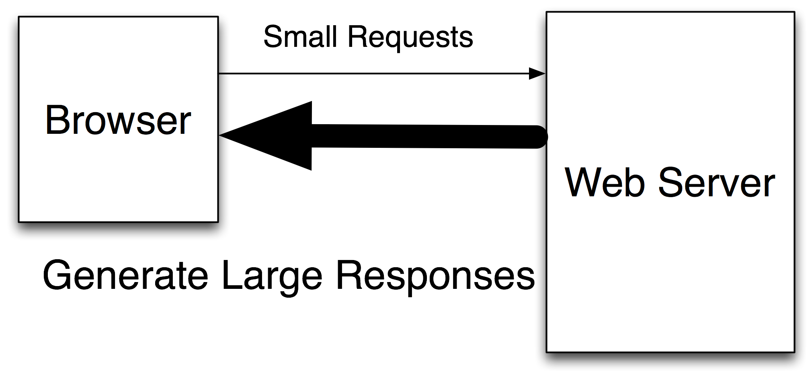
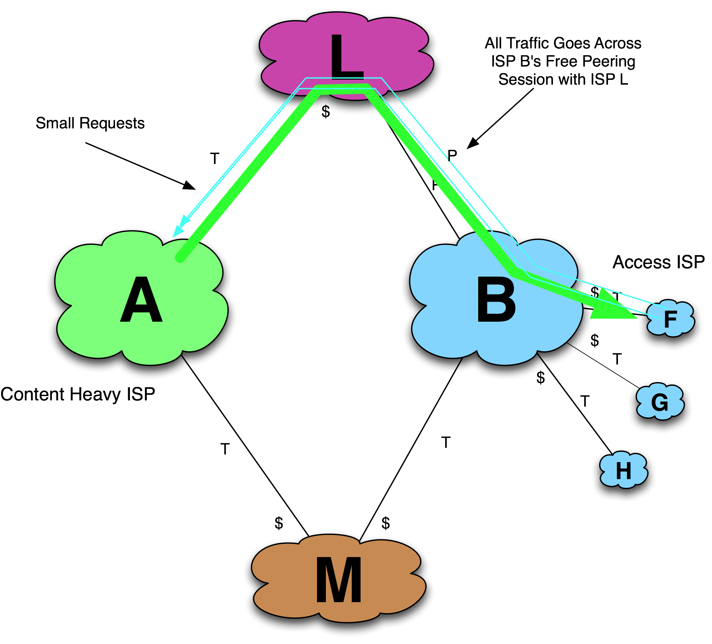
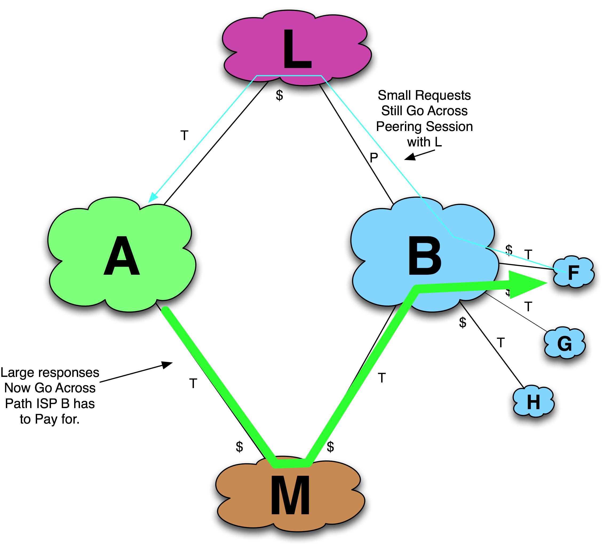

Tactic 9. Traffic Manipulation
One of the most clever, one of the most devious, and absolutely one of the most fun tactics to discuss is the Traffic Manipulation tactic.
This tactic leverages the fact that web traffic is asymmetric (Figure 11-21) and the content companies get to decide which of potentially many paths this relatively large proportion of traffic will flow.

Figure 11-21. The fact that small requests generate large responses can be leveraged.
In the Traffic Manipulation tactic, the content-heavy initiator (ISP A) forces its traffic to the target’s (ISP B’s) upstream transit provider, thus maximizing the financial cost to the target ISP to receive the initiator’s traffic.
To illustrate, consider Figure 11-22, where ISP A wants to peer with ISP B. Assume that the initiator ISP’s large responses normally travel through the target ISP’s peer “L,” as shown in the figure. Thus, ISP B receives ISP A traffic for free.

Figure 11-22. Initial context for Traffic Manipulation tactic.
If ISP A asks ISP B to peer, the answer will probably be “No, we already get your traffic for free through our peering arrangement with ISP L.” Rationally, ISP A does not attempt to peer with ISP B at this point.
ISP A instead forces its traffic to ISP B to go through ISP M, which is ISP B’s transit provider, causing ISP B’s transit bill to increase (Figure 11-23). I have heard stories of how this approach was amplified by using a traffic generator to replay traffic from a previous month!

Figure 11-23. Traffic shifts during the Traffic Manipulation Tactic.
After some time elapses and lots of traffic is sent through ISP B’s transit provider ISP M, ISP A opens a dialog with ISP B. ISP B reviews the traffic analysis data and is surprised that ISP A has not appeared on the radar screen before as a potential peer (Figure 11-24). Perhaps it was a spot event, a bug in the peering analysis software. In any case, it is the peering coordinator’s job to deal with these issues rapidly and keep the transit expenses low. Seeing the great transit expense that is paid for access to this traffic, the peering decision is easy for ISP B: ISP A is clearly a large traffic peer that is expensive to access over a transit link. Peering is established with the target.

Figure 11-24. The peering request occurs after some time.
Any artificial traffic amplification stops a month or two after peering is established. Since only a small percentage of ISPs perform the traffic analysis necessary to detect this maneuver, this tactic often goes undetected.
The Traffic Manipulation tactic is most effectively deployed by Large-Scale Network-Savvy Content Providers. Since web traffic is asymmetric, the producer of the responses (the content player) has the greater ability to force a larger amount of traffic along one path or another.
Along the same lines, Avi Freedman shared anecdotes of ISPs using large web spider deployments to pull content across peering and transit sessions in order to generate inbound traffic to meet peering ratios. Similarly, transit providers often offer special deals for access-heavy ISPs to help them balance their traffic ratios. Sometimes, ISPs send traffic along circuitous paths in order to maintain peering ratios.
All of these tactics require spare capacity to handle the manipulated traffic. In addition, if the tactic is detected, the peering coordinator community is small enough that everyone in the community hears about it.
This tactic is seen in the community as “evil, clever, and antisocial,” all at the same time. Conversely, Traffic Manipulation is seen by some ISPs in the community as a perfectly valid and appropriate means to manage traffic ratio requirements for peering.